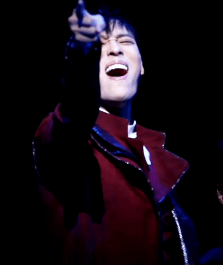

Choi Jae-Rim
공식홈페이지 바로가기

date of Birth: 1985.04.29
- Career
- Awards
- Contact
Career
since 2009.01.09
- Musical
- Play
- Opera
- TV
- Concert
Musical
마틸다 MATILDA 2022 트런치불
킹키 부츠 KINKY BOOTS 2022 롤라
아이다 AIDA 2022 라다메스
썸씽 로튼 SOMETHING ROTTEN 2022 셰익스피어
하데스타운 HADESTOWN 2021 헤르메스
시카고 CHICAGO 2021 빌리 플린
젠틀맨스 가이드 GENTLEMAN'S GUIDE_TO LOVE AND MURDER 2020 다이스퀴스
에어포트 베이비 AIRPORT BABY 2020 조쉬 코헨
복사꽃, 생각하니 슬프다 2020 (Web Musical) 사도
킹키 부츠 KINKY BOOTS 2019 롤라
외 18개 작품
Play
타지마할의 근위병 GUARDS AT TAJ 2017 휴마윤
안티고네 ANTIGONE 2016 경비병3
유령 GHOSTS 2014 만데스 목사
Opera
리타 RITA 2014-2016 가스파로
TV
그린 마더스 클럽(JTBC DRAMA) - 재웅 역 2022
로또 싱어 (MBN) - 최종 승자 2020-2021
세계문화기행 - 셰익스피어 편 (EBS) 2017
SNL KOREA – GUEST SINGER (tvN) 2010
남자의 자격 – 합창단 편(KBS) 2009
Concert
최재림 콘서트 - MONDAY OFF! 2021
한류 콘서트 vol.1 (도쿄 긴자 야마하 홀) 2019
THE VOICE - 최재림을 듣다 2019
CHOI JAERIM CONCERT (도쿄 히라츠카홀) 2018
CHOI JAERIM CONCERT (도쿄 FM HALL) 2016
Awards
제16회 DIMF 어워즈 올해의 스타상 2022 시카고
제6회 한국뮤지컬어워즈 남우조연상 2022 시카고
제3회 한국뮤지컬어워즈 남우주연상 2019 마틸다
제6회 대한민국 예술문화인상 뮤지컬 부문 2018
Contact
포킥스 엔터테인먼트 For Kyyks Entertainment
경기도 성남시 분당구 황새울로335번길 10, 멜로즈프라자 570호
(031)701-5258
kyyker@naver.com